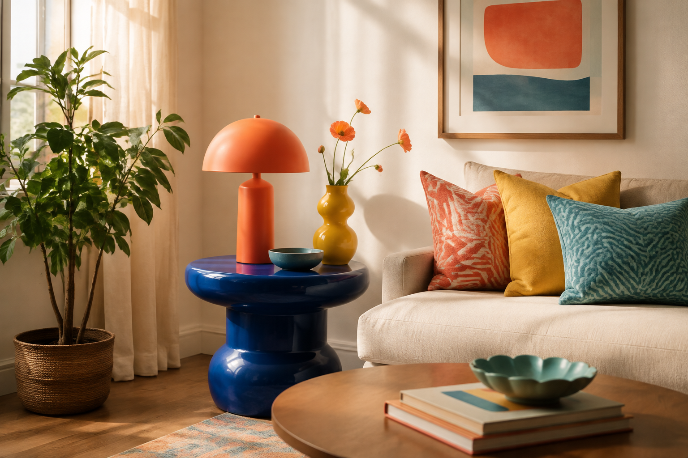

vivace
/viˈvatʃe/ · aggettivodi un colore forte e luminoso
中文：鲜艳的；明亮的
Abbiamo deciso di scegliere colori vivaci per l’arredamento del soggiorno. 中文：我们决定为客厅装饰选择鲜艳的颜色。
中文：用“多巴胺装饰”给家里增添快乐。
通过一种充满色彩的室内设计潮流，学习谈论家居、情绪、图案与个人意义。意大利语为主，中文帮助理解。

严格对应原站 6 个词汇。
di un colore forte e luminoso
中文：鲜艳的；明亮的
Abbiamo deciso di scegliere colori vivaci per l’arredamento del soggiorno. 中文：我们决定为客厅装饰选择鲜艳的颜色。
lo stile, le decorazioni e i mobili di una stanza
中文：室内装饰；陈设
Il nostro alloggio era carino, ma l’arredamento era un po’ pacchiano. 中文：我们的住处不错，但装饰有点俗气。
una sostanza o un composto, soprattutto se prodotto artificialmente
中文：化学物质
Il fumo di sigaretta contiene centinaia di sostanze chimiche tossiche. 中文：香烟烟雾含有数百种有毒化学物质。
molto forte o intenso
中文：强烈的；深切的
Ha provato una profonda delusione quando la sua squadra ha perso. 中文：他的球队输掉比赛时，他感到非常失望。
carta spessa usata per decorare le pareti di una stanza
中文：墙纸；壁纸
Credo che una carta da parati floreale starebbe bene nella camera principale. 中文：我觉得主卧室铺花卉墙纸会很好看。
una persona o un’organizzazione che usa i servizi di un professionista o di un’azienda
中文：客户；顾客
I nostri clienti si aspettano un servizio di alto livello dalla nostra azienda. 中文：我们的客户期望公司提供高水平的服务。
完整保留原站 11 段与逐段中文。
Quando guardiamo qualcosa di bello, come un’opera d’arte, il sistema di ricompensa del nostro cervello si attiva e ci regala una sensazione di felicità. E non vale soltanto per l’arte: anche trovarsi in una bella stanza può renderci più felici.
Quando siamo felici, questo influenza anche il modo in cui percepiamo le altre esperienze. Alcuni studi, per esempio, hanno scoperto che trovarsi in una stanza luminosa e dai colori vivaci fa sembrare più buoni persino cibi e bevande.
Forse, quindi, non sorprende che una delle grandi tendenze dell’arredamento su TikTok in questo momento sia il “decor dopaminico”: la dopamina è infatti una delle sostanze chimiche della felicità prodotte dal nostro cervello.
In sostanza, il decor dopaminico è un arredamento che utilizza elementi come colori e materiali allegri e gioiosi per farci stare bene nel luogo in cui ci troviamo.
Come ha dichiarato la designer Joyce Huston a Elle Decor: «Nel nostro mondo post-pandemico, le persone hanno sviluppato una comprensione più profonda di come l’ambiente domestico influisca sul loro benessere mentale».
Usare il decor dopaminico per portare un po’ di allegria in casa è facile. Non esistono vere e proprie regole da seguire, ma ci sono alcuni aspetti su cui riflettere e alcune idee da provare.
Prima di tutto, non è necessario cambiare tutta la casa. Comincia in piccolo, aggiungendo colori divertenti con piccoli mobili oppure dipingendo porte e mensole, usando tanti colori vivaci o anche soltanto uno che ti piace molto.
Prova a giocare con motivi diversi sulle pareti, usando la pittura, la carta da parati o anche soltanto delle cornici. Puoi inoltre introdurre motivi divertenti in una stanza attraverso coperte, cuscini e tappeti.
La cosa più importante è che, quando entri in una stanza, tu sorrida.
E non si tratta soltanto di colori e motivi. Huston ha spiegato che le migliori stanze in stile decor dopaminico da lei realizzate includevano oggetti dal significato autentico per i suoi clienti.
In una delle sue stanze preferite, una parete esponeva i disegni dei figli del cliente accanto alle opere di artisti professionisti.
音频只朗读完整例句，不朗读空格。
表示“没有必要……”。
中文句型：没有必要……
Non è necessario cambiare tutta la casa.中文：没有必要改造整个家。
用于建议从小事开始。
中文句型：从小处开始，……
Comincia in piccolo, aggiungendo qualche colore vivace.中文：从小处开始，增添一些鲜艳的颜色。
用于强调最重要的条件。
中文句型：最重要的是……
La cosa più importante è che tu ti senta a casa.中文：最重要的是你有宾至如归的感觉。
表示“涉及；关乎……”。
中文句型：这关乎……
Non si tratta soltanto di colori e motivi.中文：这不仅仅关乎颜色和图案。
点击音频后朗读补全答案的完整句子。
1. Abbiamo scelto colori ______ per il soggiorno.
2. Mi piace l’______ di questa stanza.
3. Il cervello produce diverse ______.
4. Ha sviluppato una comprensione più ______ del problema.
5. Vorrei mettere una ______ floreale.
完整保留原网页 5 个主要讨论题。
中文：你如何看待多巴胺装饰？
中文：你认识家里色彩鲜艳的人吗？
中文：你会如何描述自己家的装饰风格？
中文：你最喜欢哪些装饰或设计风格？
中文：如果要翻新或重新装修房子，你会改变什么？